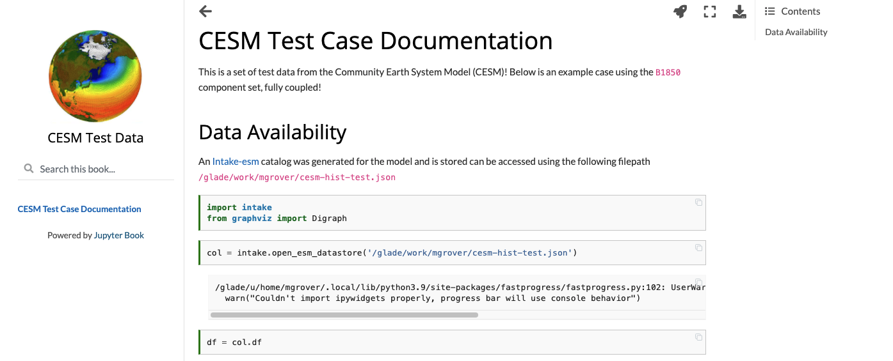

Creating Model Documentation Using Jupyterbook and Intake-esm#
A common step to any project is documenting your data and your data workflow. Fortunately, open tools in the scientific python ecosystem make that much easier! In this example, we will cover creating your github repo, creating the catalog, visualizing the catalog, and generating a static webpage you can share with collaborators!
Fair Warning#
This week’s post is quite detailed, so just a warning! If you would like to look at the finished product, check out the following
By the end of this post, we will cover how to build a webpage that looks like this 
Create your Github Repository#
Go to Github and select “New” in the top lefthand corner next to “Repositories” - this will pull up the following window. Once you are here, go ahead and name your repository!
Be sure to add:
Repository name
Description
README
Gitignore (use the python template)
Choose a license

Clone your Repository#
At this point, you can go ahead and clone your repository! You can either clone to your local machine, or to some Jupyterhub (such as the NCAR Jupyterhub), which will do in this case.
Copy the link from Github#
Copy the link from Github by clicking on the green “Code” button

Clone to your machine!#
We want to clone to the repository within the Jupyterhub, so once logging on, we open a terminal and paste the link using the following syntax
git clone https://github.com/mgrover1/cesm-test-data.git
Create a docs directory#
Now that you cloned the repository, move into it and create a docs directory using the following
cd cesm-test-data
mkdir docs
Build your Catalog#
Open a new Jupyter Notebook called model_documentation.ipynb within the docs directory and select a development environment which includes the following:
jupyter-book
ecgtools
If you haven’t installed these yet, you can use conda and pip (ecgtools is not yet on conda-forge)
conda install -c conda-forge jupyter-book intake-esm graphviz
pip install ecgtools
In this case, follow the instructions in the Building an Intake-esm catalog from CESM2 History Files post provides the instructions for building the data catalog
Read the Catalog and Visualize the Components and Frequency#
A couple weeks ago, we covered Creating Visualizations of Intake-ESM Catalogs which is helpful for understanding how Graphviz works!
Imports#
import intake
from graphviz import Digraph
Read in the Test History Catalog#
col = intake.open_esm_datastore('/glade/work/mgrover/cesm-hist-test.json')
We will assign the dataframe from the catalog to its own variable
df = col.df
Visualize the Catalog#
Using the Diagraph object from the Graphviz library, we setup a loop to create the visualization using the three categories
Case
Component
Frequency
# Create Digraph object - use the left to right orientation instead of vertical
dot = Digraph(graph_attr={'rankdir': 'LR'})
# Save the catalog as a pdf
dot.format = 'pdf'
# Start counting at one for node numbers
num_node = 1
# Loop through the different cases
for case in df.case.unique():
case_i = num_node
dot.node(str(case_i), label=case)
num_node += 1
# Loop through the different components in each case
for component in df.loc[df.case == case].component.unique():
comp_i = num_node
dot.node(str(comp_i), label=component)
dot.edge(str(case_i), str(comp_i))
num_node += 1
# Loop through the frequency in each component within each experiment
for frequency in df.loc[(df.case == case) & (df.component == component)].frequency.unique():
freq_i = num_node
# Pull out the the stream information
stream = df.loc[
(df.case == case) & (df.component == component) & (df.frequency == frequency)
].stream.values[0]
# Add both stream and frequency information to these bubbles
dot.node(str(freq_i), label=f'stream: {stream} \n frequency: {frequency}')
dot.edge(str(comp_i), str(freq_i))
num_node += 1
comp_i += 1
case_i += 1
Now visualize it in inline by running a cell with just the dot object
dot
Save the Visualization#
In the block of code above, we specified dot.format = 'pdf' which will ensure that when we save the graph, it is in PDF format. Other options include (but not limited to) svg and png!
The Diagraph method for saving is .render() with the filename in the argument (within the parentheses)
dot.render('cesm_test_catalog')
'cesm_test_catalog.pdf'
This saved a file within your directory called cesm_test_catalog.pdf! You can double click this within your file browser to take a look
Add Jupyterbook files#
If you are curious about Jupyterbook, be sure to checkout their official documentation, specifically their building your first book tutorial!
The main two files we need now are
The table of contents (
_toc.yml)The config file (
_config.yml)
Go ahead and create text files with your docs directory using those identical filenames
Download a sample CESM logo#
I copied over a copy of the CESM logo to Github, which can be downloaded using the following (be sure to save to an an image directory in docs
wget https://raw.githubusercontent.com/mgrover1/cesm-workflow/main/images/cesm.jpg
Adding to your Config (_config.yml) file#
Within your _config.yml file, input the following
title: "CESM Test Data"
logo: images/cesm.jpg
execute:
execute_notebooks: "off"
Add to your Table of Contents (_toc.yml) file#
This is where you place your content - in this case, the model_documentation.ipynb notebook. Jupyterbook does not require you specify the file type here - so leave off the .ipynb
- file: model_documentation
Build your Book!#
Now that you have your content, config file, and table of contents, it’s time to build the book. Make sure you are in your repository root directory, and run the following
jupyter-book build docs
If it built correctly, you should see the following
===============================================================================
Finished generating HTML for book.
Your book's HTML pages are here:
docs/_build/html/
You can look at your book by opening this file in a browser:
docs/_build/html/index.html
Or paste this line directly into your browser bar:
file:///glade/work/mgrover/git_repos/cesm-test-data/docs/_build/html/index.html
===============================================================================
View the Book on Github#
It can be difficult to view the book on the Jupyterhub, but fortunately we can use Github for publishing this online!
The Jupyterbook publish your book online docs are helpful here, so we use the second part here describing using Github Pages
Install Github Pages Import#
If you have not done so already, install the following
pip install ghp-import
Build the book and push to your Github Pages branch#
Move to your docs directory again, and run the following (after building your book)
ghp-import -n -p -f _build/html
Rebuilding your book#
If you make changes to your notebook or want to rebuild your book, run the following within your project root directory
jupyter-book build docs
and this within your docs directory
ghp-import -n -p -f _build/html
Go checkout your book!#
Your book will be published along the following url structure
{github_username}.github.io/{repository_name}
For this example, the book can be found here
Conclusion#
This was a fairly in-depth post which covered content from previous ESDS blog posts, but I hope this provides a starting point for documentation your data, visualizing the data available, and sharing your data documentation with others!